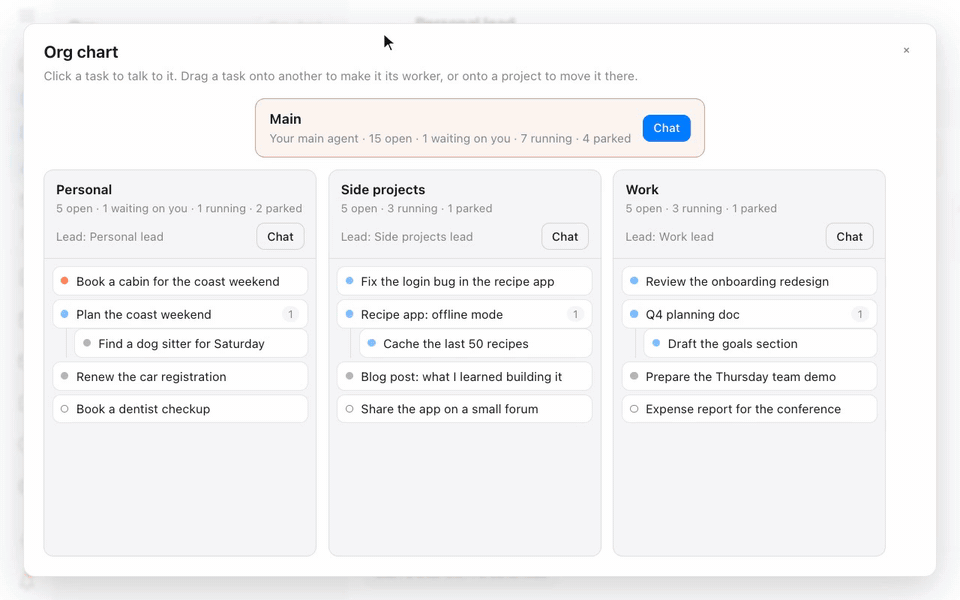
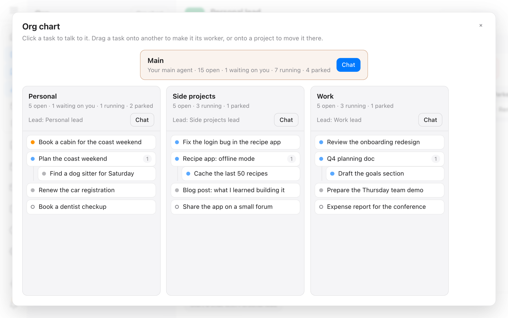
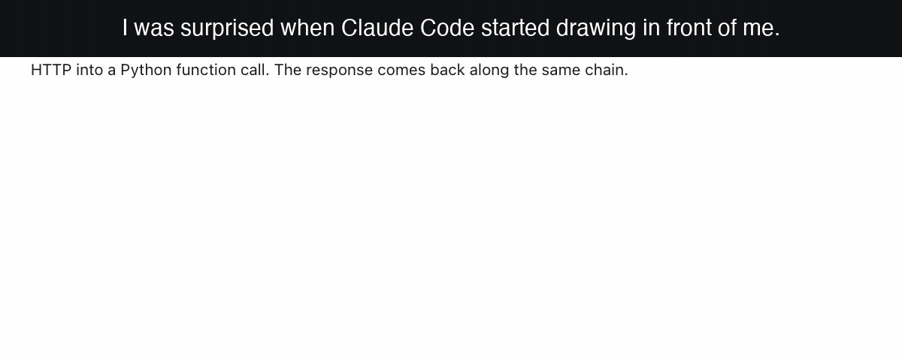
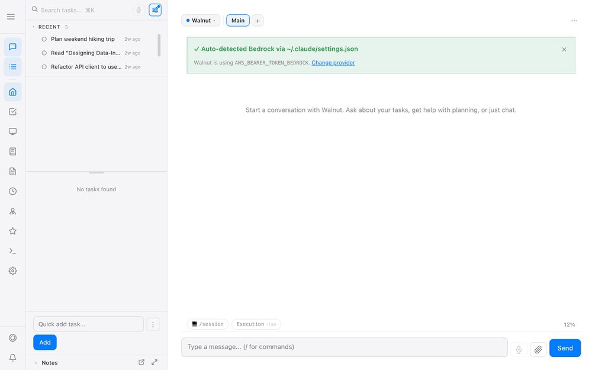
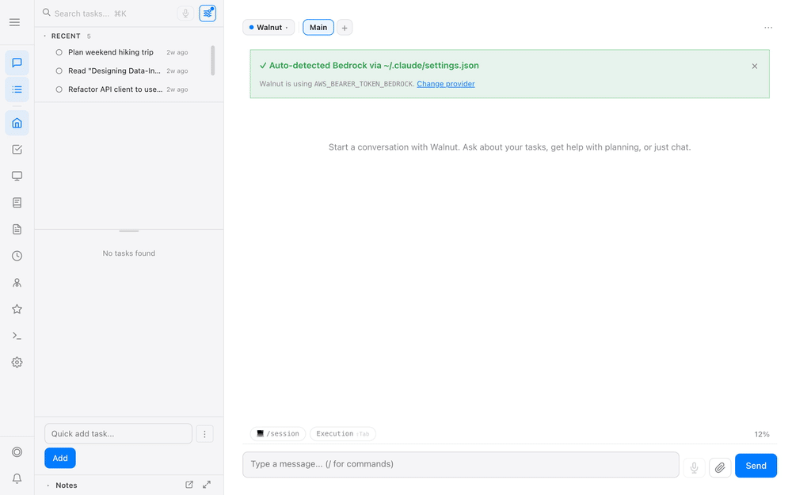
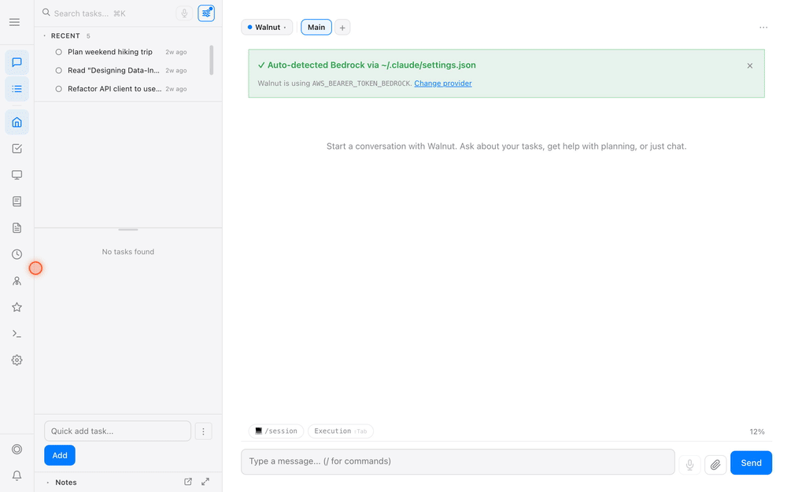
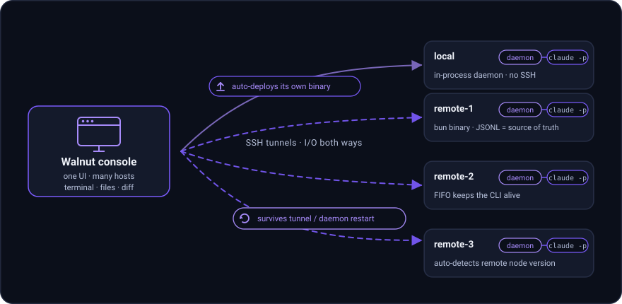
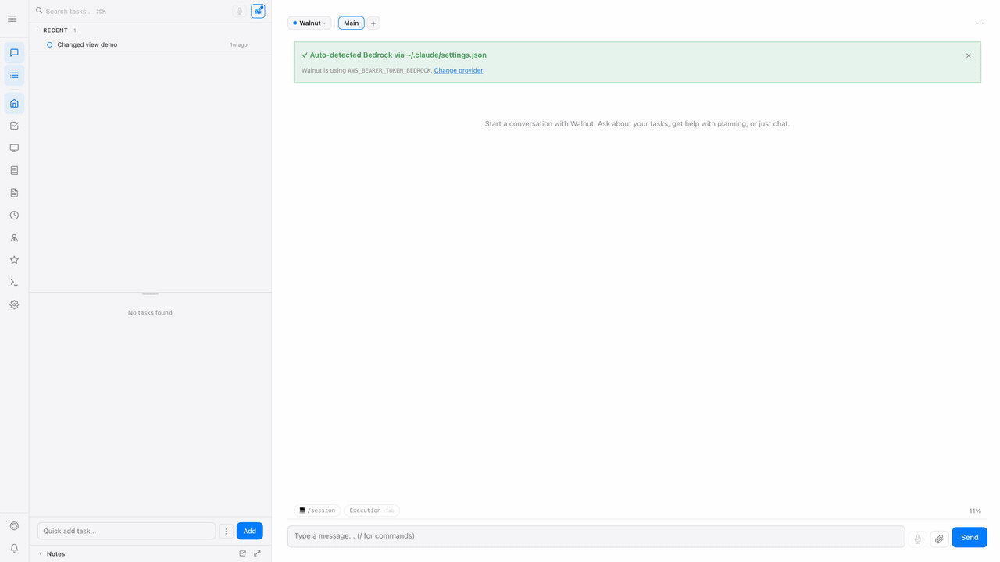
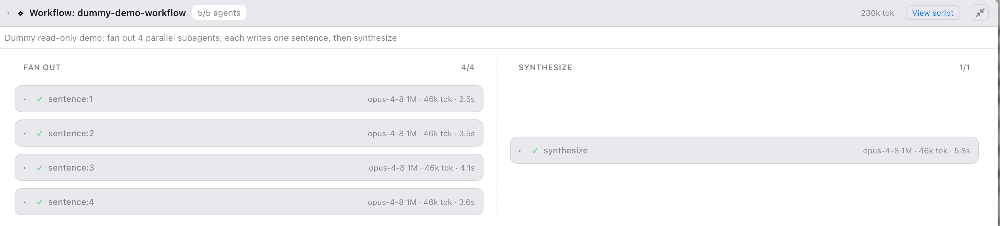
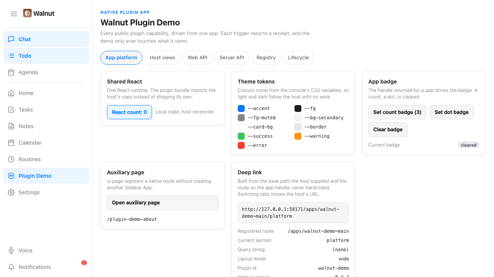

AI agents that run your work
like a small company
Replace Notion and your Claude Code terminals with one open-source app. You talk to one CEO agent (Main, in the app), and each project gets a lead that runs its own Claude Code sessions and workers. Tasks, notes, calendar and every coding session, on your machine.
~/.local/bin/walnut web
macOS or Linux. It needs only Claude Code, signed in once. Then open http://localhost:3456. Or Homebrew and the Mac app.


One app for your work and your agents
Stop losing work in terminal tabs and note pages. Walnut gives your agents an org, gives Claude Code a real UI, and ties every session to the work it's for.
Main, and a lead for each project
The Org page is where you run the company. Main, your CEO agent, sees every project. Each project has a lead that plans the work and hands it to workers, each one its own Claude Code session.
Every lead's row says what it is working on or what it asks you, and you answer right where the question waits. The org chart shows the whole team; drag a task onto another to make it that task's worker.

Sessions that draw
Rich mode is on by default: a session can answer with a diagram, a table, or a laid-out page instead of a wall of text, and it draws in as the answer streams.

Natural language → task → live session
Tell the main agent what you want. It creates the task and spawns a Claude Code session for it in one shot, then streams every tool call and output live in your browser.
A real session panel
Chat with the session and switch modes like the CLI, open a real terminal, browse files, recap past messages, or fork into a sub-session, each in one click.

Focus, Satellite, Parked
Drag what you're actively working on into Focus, keep secondary work in Satellite, and shelve what waits in Parked. Status is color-coded and updates as the AI works.

Tasks, agent chat & Claude Code on one screen
Tasks on the left, the main agent chat in the middle, your live Claude Code session on the right. The agent manages it all with full context from your memory and notes.

Notes & memory the AI can search
An Obsidian-style notes vault stored locally and indexed in a local vector database. Ask "what is my health routine?" and the agent finds it across your notes. Nothing leaves your disk.
One console, every machine
One Walnut console drives Claude Code on your laptop and any number of SSH hosts, and your agents can start work on either. Point at a host and Walnut deploys its own small daemon there over SSH; no manual copy step.
Sessions keep running when the SSH connection drops, and terminal, files, diff, and the command palette all work over SSH.

Review what the agent changed
A GitHub-style, per-session diff: see exactly what each session touched, split or unified, grouped by repo. Rebuilt from the session's own history, so edits stay attributed per session even when several agents share a repo.
Select code → "Ask about this" drops it into the same agent's chat, and click a line for a PR-style comment box that batches into one review.

See dynamic workflows as a live flow-graph
Claude Code can fan out into a dynamic multi-agent workflow, and Walnut is where you actually watch it run. Each phase becomes a column, each subagent a node with its live status, model, token spend, and duration.
Full Claude Code dynamic-workflow support: parallel fan-out and sequential stages are parsed straight from the session stream. Click any node for that subagent's full transcript; it even survives a reload, rebuilt from the on-disk manifest.

🖥️ Multi-session dashboard
Run and monitor dozens of Claude Code sessions side by side, with live status, mid-session model switching, and plan → execute.
✅ Tasks that drive sessions
A Project → Folder → Task → Subtask hierarchy with priorities, due dates, dependencies, and tags, each task wired to its Claude Code session.
🔌 Sync with any task platform
Two-way sync to Microsoft To-Do and Jira ships built in, and they're just plugins. One generic sync contract means any platform (Asana, Linear, GitHub Issues, an internal tracker) is onboarded by dropping a plugin into ~/.open-walnut/plugins/. Internal plugins never leave your machine.
🧠 Self-organizing memory
Working memory updates as you go, and a background agent distills daily logs into searchable topic pages, with recency-weighted, hybrid BM25 + vector search.
📓 Notes the AI can search
Obsidian-style markdown with [[wiki-links]], backlinks, a folder tree, and hybrid search your agents and sessions can use.
💬 Multi-conversation agents
Create on-demand agents, each with independent fresh-context conversations; what you discuss is auto-distilled into that agent's memory.
⚙️ Cron & automation
One-time, interval, and cron-expression jobs with timezones, heartbeat checklists, and automated session triage on a dedicated page.
⌨️ Command & skill palettes
Browse and run slash commands and skills from one place, including the ones discovered on your remote hosts.
🤖 Every coding agent
Claude Code by default, and Codex, Gemini, OpenCode, and Goose sessions in the same columns, each tied to its task (install their CLIs first).
📅 Calendar
Your calendar beside your tasks: drag a task onto the calendar to schedule it.
🔒 Local-first & private
Plain JSON / Markdown / SQLite in a local folder. No telemetry, no cloud database: your data stays on your machine.
Write your own app inside Walnut
Walnut is a plugin host. One command scaffolds a plugin, links it into the running console, and reloads it on every save.
npx @open-walnut/plugin-cli new my-plugin --dev
# every loop after that
npm run dev
That single run installs dependencies, validates the manifest, builds both entries, links the project into ~/.open-walnut/plugins/, tells the running Walnut to load it with no restart, prints your App's URL, then rebuilds and reloads while you edit.
The author packages ship from the repository today, so until the first registry release you run the same flow from a checkout. The plugin guide has the exact commands.


A real app, not an iframe
One walnut.ui.app() call and the host gives you a route, a sidebar entry, deep links, a badge, and a command-palette entry. Your React components run inside Walnut's own React tree and theme, so a plugin app looks and feels like a built-in screen. An optional webview stays available for external pages that need a separate document context, but it is not a security boundary for trusted Plugin code.
Full Node on the server side
The server entry runs in the Walnut process: tools the AI can call, hooks on sessions and tasks, cron actions, HTTP routes, WebSocket methods, custom agents and model providers, plus private storage, SQLite, and secrets. Task sync to any tracker is the same contract the built-in integrations use.
Full trust, stated plainly
Installing a plugin means trusting its code, confirmed once at install. There is no fake permission prompt around code that already has full access. What Walnut does guarantee: pinned sources, no install scripts, no silent updates, owner-scoped cleanup, and one release check that refuses to ship secrets or missing build output.
The Demo App is runnable: one native app that exercises every public plugin capability, so you can read a working shape before writing your own.
Install in one line
macOS or Linux. Walnut brings everything it runs on, so there is nothing else to install first. Its agents run on Claude Code, signed in once.
One-line script
macOS 12+ or Linux (glibc 2.28+), arm64 or x64.
~/.local/bin/walnut web
It installs into ~/.local and puts ~/.local/bin on your PATH, so a new terminal runs plain walnut web.
Homebrew
macOS or Linux.
walnut web
Mac app
Walnut inside, and it keeps itself up to date.
Or brew install --cask evanzhang008/tap/walnut.
Then open http://localhost:3456. The first start downloads a local search model (about 640 MB) and, on Apple silicon and Linux, a local voice model (1 to 2.5 GB), in the background.
Built in the open
A solo-maintained, MIT-licensed project. If it helps you run your work, a star helps others find it.